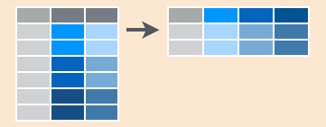
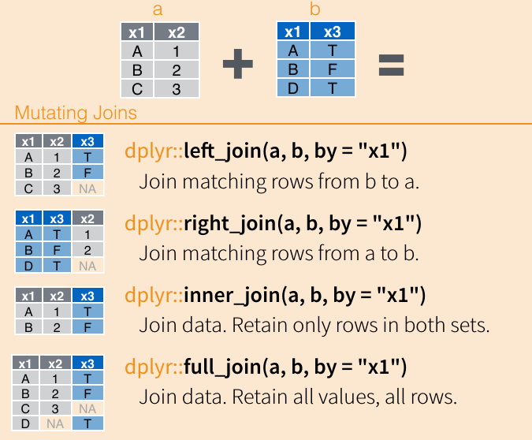

제 4 장 데이터 다루기
R 프로그램을 이용한 자료의 처리와 시각화의 기초를 다음의 3개의 패키지를 이용하여 알아보도록 하자.
- dplyr : R의 기본적인 data.frame에서 자료를 조건에 따라 선택하고, 배열하고, 결합하고, 요약하는데 편리한 함수을 제공하는 패키지이다.
- tidyr : 자료를 조건에 따라 배열을 바꾸는 함수를 제공하는 패키지이다.
- ggplot2 : 다양한 그림을 그리는데 유용한 패키지이다.
통계분석을 위하여 구성된 자료는 매우 다양한 형태를 가질 수 있다. 자료를 저장하는 형식은 자료를 구성하는 방법에 의해 매우 다르게 나타난다. 자료를 다음과 같이 간결하게 재구성하면 일관성있게 통계분석을 위한 함수를 사용할 수 있다. 다음은 자료를 재구성하는 경우의 원칙이다.
- 데이터 프레임의 각 열은 변수(variable, feature)를 나타낸다.
- 데이터 프레임의 각 행은 조사 또는 관측 단위(observation)을 나타낸다.

간결한 자료: tydy data
4.1 tidyr 패키지
tidyr 에 조건에 따라 자료를 재배치하는데 매우 유용한 패키지이다. 여러 개의 유용한 함수들중에서 가장 자주 사용되고 중요한 4개의 함수에 대하여 알아보기로 하자.
4.2 gather()
gather() 함수는 여러 개의 변수(속성들)을 선택하여 변수의 속성(key)과 각 해당하는 자료의 값(value)를 두 개의 열로 길게 배열하는 함수이다.
간단한 예를 들면 전자판매점에서 3명의 점원이 판매한 3개의 품목의 수량을 나타내는 자료이다.
sales <- data.frame(
person = c("John", "Mary", "Steve"),
tv = c(2, 1, 3),
cellphone = c(20, 25, 30),
computer = c(4, 4, 4)
)
sales## person tv cellphone computer
## 1 John 2 20 4
## 2 Mary 1 25 4
## 3 Steve 3 30 4위의 sales 자료에서 tv, cellphone,computer 는 판매점에 진영된 여러 가지 품목(item)중의 하나이다. 또한 자료에 있는 숫자들은 각 품목을 판매한 수량(quantity)이다. 3개의 제품을 속성(key 또는 attribute)으로 가지는 품목을 새로운 변수 item 으로 만들고, 각 품목에 대한 판매 수량이 새로운 변수 quantity로 나타나는 자료를 다음과 같이 만들 수 있다.
## person item quantity
## 1 John tv 2
## 2 Mary tv 1
## 3 Steve tv 3
## 4 John cellphone 20
## 5 Mary cellphone 25
## 6 Steve cellphone 30
## 7 John computer 4
## 8 Mary computer 4
## 9 Steve computer 4gather() 함수는 행으로 길게 늘어진 자료를 열로 길게 즐어지게 만드는 기능을 하는 함수이다.

4.3 spread()
spread() 함수의 기능은 gether()함수와 반대되는 작업을 수행하는 함수로 2개의 열(하나는 속성, 다른 하나는 값) 선택하여 변수의 속성들을 변수들로 변환하여 해당하는 자료의 값 하나의 행으로 길게 배열하는 함수이다. 위에서 gather()함수로 변환된 자료를 spread() 함수를 이용하여 다시 원래 자료로 변화할 수 있다.
## person cellphone computer tv
## 1 John 20 4 2
## 2 Mary 25 4 1
## 3 Steve 30 4 3spread() 함수는 열으로 길게 늘어진 자료를 행로 길게 즐어지게 만드는 기능을 하는 함수이다.

4.4 dplyr 패키지와 연결 연산자 %>%
dplyr 패키지는 다음과 같은 기능을 가진 함수를 제공한다.
select()자료의 변수를 부분적으로 선택한다.filter()자료를 일부를 주너진 조건에 따라서 선택한다.arrage()자료(행)가 배열된 순서를 바꾼다.mutate()새로운 변수를 만든다.group_by()범주형 변수에 의하여 자료를 그룹으로 나눈다.summarise()자료를 주어진 함수에 따라 요약한다.join()두 개의 자료를 결합한다.
dplyr 패키지에 있는 함수의 기능을 설명하기 위하여 hflight 패키지에 포함된 여객기의 비행기록자료를 사용해보자.
## Year Month DayofMonth DayOfWeek DepTime ArrTime UniqueCarrier FlightNum
## 5424 2011 1 1 6 1400 1500 AA 428
## 5425 2011 1 2 7 1401 1501 AA 428
## 5426 2011 1 3 1 1352 1502 AA 428
## 5427 2011 1 4 2 1403 1513 AA 428
## 5428 2011 1 5 3 1405 1507 AA 428
## 5429 2011 1 6 4 1359 1503 AA 428
## TailNum ActualElapsedTime AirTime ArrDelay DepDelay Origin Dest Distance
## 5424 N576AA 60 40 -10 0 IAH DFW 224
## 5425 N557AA 60 45 -9 1 IAH DFW 224
## 5426 N541AA 70 48 -8 -8 IAH DFW 224
## 5427 N403AA 70 39 3 3 IAH DFW 224
## 5428 N492AA 62 44 -3 5 IAH DFW 224
## 5429 N262AA 64 45 -7 -1 IAH DFW 224
## TaxiIn TaxiOut Cancelled CancellationCode Diverted
## 5424 7 13 0 0
## 5425 6 9 0 0
## 5426 5 17 0 0
## 5427 9 22 0 0
## 5428 9 9 0 0
## 5429 6 13 0 04.5 select()
select() 함수는 자료의 변수를 부분적으로 선택한다. 다음은 hflights자료에서 3개의 변수를 이름으로 선택하는 경우이다.
## DepTime ArrTime FlightNum
## 5424 1400 1500 428
## 5425 1401 1501 428
## 5426 1352 1502 428
## 5427 1403 1513 428
## 5428 1405 1507 428
## 5429 1359 1503 428다음은 변수들의 순서를 주거나 (var1:var2) 특정 문자가 변수명에 포함된 변수를 선택하는 경우이다.
## Year Month DepTime ArrTime ActualElapsedTime AirTime
## 5424 2011 1 1400 1500 60 40
## 5425 2011 1 1401 1501 60 45
## 5426 2011 1 1352 1502 70 48
## 5427 2011 1 1403 1513 70 39
## 5428 2011 1 1405 1507 62 44
## 5429 2011 1 1359 1503 64 45select() 함수는 starts_with(), ends_with(), matches() 그리고 contains()와 같은 도움 함수들을 이용하여 변수명을 선택할 수 있다.
4.6 filter()
filter() 함수는 자료를 일부를 주너진 조건에 따라서 선택한다. hflights자료에서 12월 25일에 출발한 비행기만을 선택하는 조건을 다음과 같이 적용할 수 있다.
## Year Month DayofMonth DayOfWeek DepTime ArrTime UniqueCarrier FlightNum
## 1 2011 12 25 7 609 920 AA 466
## 2 2011 12 25 7 1155 1317 AA 865
## 3 2011 12 25 7 1739 2110 AA 1294
## 4 2011 12 25 7 1339 1701 AA 1496
## 5 2011 12 25 7 1437 1543 AA 1740
## 6 2011 12 25 7 905 1020 AA 1788
## TailNum ActualElapsedTime AirTime ArrDelay DepDelay Origin Dest Distance
## 1 N3FKAA 131 115 0 9 IAH MIA 964
## 2 N4WTAA 82 40 12 0 IAH DFW 224
## 3 N3CEAA 151 114 10 4 IAH MIA 964
## 4 N3CPAA 142 114 11 14 IAH MIA 964
## 5 N528AA 66 39 -7 -3 IAH DFW 224
## 6 N4YNAA 75 39 0 0 IAH DFW 224
## TaxiIn TaxiOut Cancelled CancellationCode Diverted
## 1 5 11 0 0
## 2 9 33 0 0
## 3 26 11 0 0
## 4 9 19 0 0
## 5 11 16 0 0
## 6 8 28 0 0두 조건을 OR 로 하여 자료의 일부를 선택하려면 | 연산자를 이용한다.
## Year Month DayofMonth DayOfWeek DepTime ArrTime UniqueCarrier FlightNum
## 1 2011 1 1 6 1400 1500 AA 428
## 2 2011 1 2 7 1401 1501 AA 428
## 3 2011 1 3 1 1352 1502 AA 428
## 4 2011 1 4 2 1403 1513 AA 428
## 5 2011 1 5 3 1405 1507 AA 428
## 6 2011 1 6 4 1359 1503 AA 428
## TailNum ActualElapsedTime AirTime ArrDelay DepDelay Origin Dest Distance
## 1 N576AA 60 40 -10 0 IAH DFW 224
## 2 N557AA 60 45 -9 1 IAH DFW 224
## 3 N541AA 70 48 -8 -8 IAH DFW 224
## 4 N403AA 70 39 3 3 IAH DFW 224
## 5 N492AA 62 44 -3 5 IAH DFW 224
## 6 N262AA 64 45 -7 -1 IAH DFW 224
## TaxiIn TaxiOut Cancelled CancellationCode Diverted
## 1 7 13 0 0
## 2 6 9 0 0
## 3 5 17 0 0
## 4 9 22 0 0
## 5 9 9 0 0
## 6 6 13 0 04.7 연결연산자 %>%의 이용
위의 프로그램에서 앞에서와 다르게 head()함수를 head(filter(....))와 같이 축차적으로 사용하지 않고 연산자 %>% 뒤에 인자없이 사용하였다. 연산자 %>%는 연결 연산자(pipe operator)라고 하며 함수를 축차적으로 연속하여 사용하지 않고 왼쪽에서 생성된 자료를 오른쪽 함수의 인자로 전달 해주는 역활을 하는 유용한 연산자이며 이를 이용하려면 tidyr 패키지를 로딩해야 한다.
예를 들어 hflights자료에서 12월 25일에 출발한 비행기만을 선택하고 다시 몇 개의 변수만 선택하여 자료의 앞부분만 보여주고 싶다면 다음과 같이 연결 연산자를 이용하여 실행할 수 있다.
filter(hflights, Month==12, DayofMonth==25) %>% select(DepTime, ArrTime, FlightNum, contains("Month")) %>% head()## DepTime ArrTime FlightNum Month DayofMonth
## 1 609 920 466 12 25
## 2 1155 1317 865 12 25
## 3 1739 2110 1294 12 25
## 4 1339 1701 1496 12 25
## 5 1437 1543 1740 12 25
## 6 905 1020 1788 12 25위에서 연결 연산자를 이용하여 실행한 명령어는 다음 명령어의 결과와 같다.
t1 <- filter(hflights, Month==12, DayofMonth==25)
t2 <- select(t1, DepTime, ArrTime, FlightNum, contains("Month"))
head(t2)## DepTime ArrTime FlightNum Month DayofMonth
## 1 609 920 466 12 25
## 2 1155 1317 865 12 25
## 3 1739 2110 1294 12 25
## 4 1339 1701 1496 12 25
## 5 1437 1543 1740 12 25
## 6 905 1020 1788 12 254.8 arrange()
arrage() 함수는 자료의 행이 배열된 순서를 선택된 변수의 배열(오름차순 또는 내림차순)로 바꾼다.
hflights 자료에서 두 변수 TailNum와 ArrDelay만을 선택하고 ArrDelay의 자료의 오름차순으로 다시 배열하려면 다음과 같은 명령어를 사용한다.
## TailNum ArrDelay
## 1 N12157 -70
## 2 N814SK -57
## 3 N767SK -56
## 4 N783SK -56
## 5 N713SK -55
## 6 N37437 -55ArrDelay의 자료의 오름차순으로 다시 배열하려면 desc() 도움함수를 사용한다.
## TailNum ArrDelay
## 1 N473AA 978
## 2 N69063 957
## 3 N502MQ 918
## 4 N670UA 861
## 5 N609MQ 822
## 6 N6EAMQ 7934.9 mutate()
mutate() 함수는 새로운 변수를 생성하는 함수이다. 예를 들어 hflight자료에서
새로운 변수 비행기의 속도(AirSpeed)를 계산하려면 비행거리(Distance)를 비행시간(AirTime)으로 나누어야 한다. mutate() 함수를 이용하면 두 개 이상의 새로운 변수를 사용할 수 있다.
## Year Month DayofMonth DayOfWeek DepTime ArrTime UniqueCarrier FlightNum
## 5424 2011 1 1 6 1400 1500 AA 428
## 5425 2011 1 2 7 1401 1501 AA 428
## 5426 2011 1 3 1 1352 1502 AA 428
## 5427 2011 1 4 2 1403 1513 AA 428
## 5428 2011 1 5 3 1405 1507 AA 428
## 5429 2011 1 6 4 1359 1503 AA 428
## TailNum ActualElapsedTime AirTime ArrDelay DepDelay Origin Dest Distance
## 5424 N576AA 60 40 -10 0 IAH DFW 224
## 5425 N557AA 60 45 -9 1 IAH DFW 224
## 5426 N541AA 70 48 -8 -8 IAH DFW 224
## 5427 N403AA 70 39 3 3 IAH DFW 224
## 5428 N492AA 62 44 -3 5 IAH DFW 224
## 5429 N262AA 64 45 -7 -1 IAH DFW 224
## TaxiIn TaxiOut Cancelled CancellationCode Diverted Speed SpeedKM
## 5424 7 13 0 0 386.4000 621.8490
## 5425 6 9 0 0 343.4667 552.7546
## 5426 5 17 0 0 322.0000 518.2075
## 5427 9 22 0 0 396.3077 637.7938
## 5428 9 9 0 0 351.2727 565.3173
## 5429 6 13 0 0 343.4667 552.7546새로 생성된 변수만 선택하고 싶다면 transmute()함수를 사용한다.
## Speed SpeedKM
## 5424 386.4000 621.8490
## 5425 343.4667 552.7546
## 5426 322.0000 518.2075
## 5427 396.3077 637.7938
## 5428 351.2727 565.3173
## 5429 343.4667 552.75464.10 group_by() 와 summarise()
통계분석에서 범주(categorical variable)에 따라 자료의 요약을 하는 것은 매우 흔한 일이다. group_by() 함수는 자료를 선택된 범주형 변수에 의하여 묶어주는 기능을 하며 group_by() 함수는 특별한 결과를 생성하지 않고 자료(dataframe)에 그룹에 대한 정보를 저장한다.
group_by() 에 의하여 그룹이 생성된 자료(dataframe)에 summarise()를 이용하여 통계 함수를 적용하면 지정된 그룹별로 요약 통계량이 기술된다.
다음의 예는 hflight 자료에서 도착공항별(Dest)로 도착이 지연된 시간(ArrDelay)의 평균을 구하는 명령어이다.
## # A tibble: 116 × 2
## Dest avg_delay
## <chr> <dbl>
## 1 ABQ 7.23
## 2 AEX 5.84
## 3 AGS 4
## 4 AMA 6.84
## 5 ANC 26.1
## 6 ASE 6.79
## 7 ATL 8.23
## 8 AUS 7.45
## 9 AVL 9.97
## 10 BFL -13.2
## # … with 106 more rows위의 명령어는 다음 명령어와 같은 결과를 준다.
## # A tibble: 116 × 2
## Dest avg_delay
## <chr> <dbl>
## 1 ABQ 7.23
## 2 AEX 5.84
## 3 AGS 4
## 4 AMA 6.84
## 5 ANC 26.1
## 6 ASE 6.79
## 7 ATL 8.23
## 8 AUS 7.45
## 9 AVL 9.97
## 10 BFL -13.2
## # … with 106 more rows물론 그룹을 지정하지 않고 전체 자료의 통계도 구할 수 있다.
## avg_delay
## 1 7.094334또한 다음과 같이 여러 개의 통계량을 동시에 구할 수 있다.
groupdata <- group_by(hflights, Dest)
summarise(groupdata, avg_delay = mean(ArrDelay, na.rm=TRUE),
count = n(),
dist = mean(Distance, na.rm = TRUE),
delay = mean(ArrDelay, na.rm = TRUE))## # A tibble: 116 × 5
## Dest avg_delay count dist delay
## <chr> <dbl> <int> <dbl> <dbl>
## 1 ABQ 7.23 2812 749. 7.23
## 2 AEX 5.84 724 190 5.84
## 3 AGS 4 1 821 4
## 4 AMA 6.84 1297 518. 6.84
## 5 ANC 26.1 125 3266 26.1
## 6 ASE 6.79 125 914. 6.79
## 7 ATL 8.23 7886 692. 8.23
## 8 AUS 7.45 5022 143. 7.45
## 9 AVL 9.97 350 834 9.97
## 10 BFL -13.2 504 1428 -13.2
## # … with 106 more rows여러 개의 변수에 같은 함수를 동시에 적용하려면 summarise_at() 함수를 사용한다. 다음은 공항별로 2개의 변수( ArrDelay, DepDelay)의 평균, 최소, 최대값을 구하는 명령어이다.
group_by(hflights, Dest) %>% summarise_at( c("ArrDelay", "DepDelay"), funs(mean(., na.rm=TRUE), min (., na.rm=TRUE), max(., na.rm=TRUE)))## Warning: `funs()` was deprecated in dplyr 0.8.0.
## Please use a list of either functions or lambdas:
##
## # Simple named list:
## list(mean = mean, median = median)
##
## # Auto named with `tibble::lst()`:
## tibble::lst(mean, median)
##
## # Using lambdas
## list(~ mean(., trim = .2), ~ median(., na.rm = TRUE))
## This warning is displayed once every 8 hours.
## Call `lifecycle::last_lifecycle_warnings()` to see where this warning was generated.## # A tibble: 116 × 7
## Dest ArrDelay_mean DepDelay_mean ArrDelay_min DepDelay_min ArrDelay_max
## <chr> <dbl> <dbl> <int> <int> <int>
## 1 ABQ 7.23 8.48 -26 -14 290
## 2 AEX 5.84 6.38 -34 -17 257
## 3 AGS 4 10 4 10 4
## 4 AMA 6.84 6.70 -28 -13 301
## 5 ANC 26.1 25.0 -21 -6 281
## 6 ASE 6.79 16.0 -31 -33 252
## 7 ATL 8.23 10.3 -41 -17 701
## 8 AUS 7.45 8.42 -24 -15 244
## 9 AVL 9.97 8.90 -23 -10 331
## 10 BFL -13.2 5.06 -56 -13 206
## # … with 106 more rows, and 1 more variable: DepDelay_max <int>위에서 함수 summarise의 결과는 dataframe보다 자료 저장의 형식이 개선된
tibble 형식으로 표시된다.
4.11 join()
join() 함수는 두 자료(dataframe)를 선택된 공통의 범주형 변수에 의거하여 결합한다. 결합하는 경우 두 개의 인자의 위치에 따른 4가지의 결합기준을 이용할 수 있다.
- left_join 왼쪽 자료의 항목을 기준으로 결합
- right_join 오른쪽 쪽 자료의 항목을 기준으로 결합
- inner_join 두 자료의 공통 항목만을 결합
- full_join 두 자료의 모든 항목을 결합 
다음과 같은 두 개의 자료(dataframe)을 이용하여 자료를 결합할 때 4가지 기분의 차이점을 살펴보자.
Ldata <- data.frame(ID=c("A","B","C"), x=c(1,2,3))
Rdata <- data.frame(ID=c("A","B","D"), y=c(T,F,T))## ID x
## 1 A 1
## 2 B 2
## 3 C 3## ID y
## 1 A TRUE
## 2 B FALSE
## 3 D TRUE## ID x y
## 1 A 1 TRUE
## 2 B 2 FALSE
## 3 C 3 NA## ID x y
## 1 A 1 TRUE
## 2 B 2 FALSE
## 3 D NA TRUE## ID x y
## 1 A 1 TRUE
## 2 B 2 FALSE## ID x y
## 1 A 1 TRUE
## 2 B 2 FALSE
## 3 C 3 NA
## 4 D NA TRUE